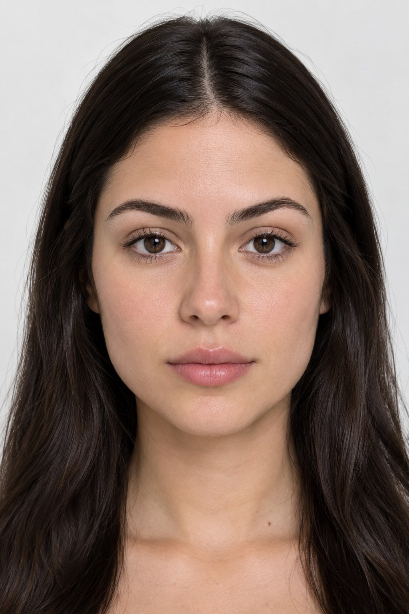

Simulador de Estética Facial
Um simulador visual educacional para explorar conceitos de estética facial.
Como usar
- Use a imagem de exemplo ou envie uma foto.
- Adicione uma área, arraste-a e redimensione conforme desejar.
- Ajuste a intensidade e gere a visualização local.
- Compare antes e depois, ou baixe o resultado em PNG.
EDITOR
Áreas de visualização
Exibindo a imagem de exemplo.
Área selecionada: Testa
Testa: cria uma nova área ajustável próxima à testa.

Clique em uma área para selecioná-la. Arraste o oval para reposicioná-lo e use a bolinha no canto para redimensioná-lo.
Controles
Intensidade da área selecionada: 0%
A integração com IA generativa está em desenvolvimento. Nesta versão, a visualização é processada localmente no seu navegador.
Usar outra imagem
Tecnologias utilizadas
- HTML
- CSS
- JavaScript
- Canvas API
- Git
- GitHub Pages